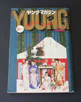
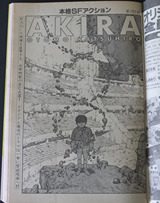
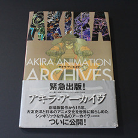
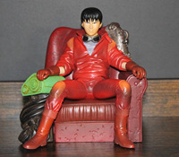
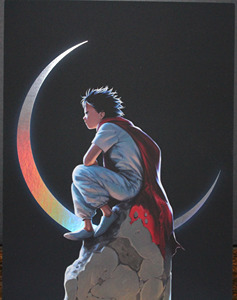

<< go back collection last updated: 2025-05-26
This is my AKIRA collection, everything I got from 2021 until now. Updated anytime I get something new which isn't so often anymore. Click on the item names to see more info and pictures.
BOOKS & PRINT
AKIRA 35th Anniversary box set ENG
Kodansha USA 1st Edition 2017-10-31
Contains all volumes in hardcover, AKIRA Club, "Good for Health, Bad for Education" patch
KC Deluxe AKIRA JP
Kodansha 1984-1993
Volume 1, 40th edition, 1996-04-20
Volume 2, 33rd edition, 1996-04-20
Volume 3, 28th edition, 1996-04-20
Volume 4, 27th edition, 1996-04-20
Volume 5, 17th edition, 1996-05-20
Volume 6, 16th edition, 1996-05-20
YOUNG Magazine JP
Kodansha N/A edition 1982-1990
#2, part 27 (collected in AKIRA 2), 1984-01-16
#8, part 32 (collected in AKIRA 2), 1984-04-16
#23, part 46 (collected in AKIRA 3), 1984-12-03
#18, part 101 (collected in AKIRA 6), 1989-07-03

Episode 27
Episode 32
Episode 46

Episode 101
Epic Comics Akira ENG
Marvel N/A edition 1989-1996
#10 "The Awakening"
AKIRA Animation Archives JP
Kodansha 1st edition 2002-12-26
Artbook related to the movie, with obi strip

AKIRA Graph Book JP
Kodansha 1st edition 1988-10-01
Supplementary "artbook" material for the movie, has a dictionary for AKIRA related terms, people, and things
AKIRA pamphlet JP
AKIRA Committee 1st edition 1988-07-16
Promotional material handed out to movie-goers during film's release
Brutus 729 JP
Brutus 1st edition? 2012-04-15
Magazine with a section talking about Otomo and Akira, comes with a sticker book that was used... I used the rest
>> Brutus "Otomo" 2014-03-31
Version of the Otomo interview/section on it's own, also came with a sticker book that was used
AKIRA Art of Wall ENG
Kodansha 1st edition 2022-10-11
Three large scrolls that collect all of the "Art of Wall" murals that appeared in Shibuya from 2017-2019, also has a book about the project and interview with Otomo; comes with Art of Wall "A.D. 2019" poster
Otomo Katsuhiro x Graphic Design JP
PIE International 1st edition 2014-02-28
Book collecting a bunch of posters designed by Otomo over the years, comes with a recreation of the AKIRA Special Edition DVD poster
>> Otomo Katsuhiro: Reprints of Classic Posters 2017-09-22
Also published by PIE International, selection of 20 posters picked by Otomo himself

Otomo: A Global Tribute to the Mind Behind AKIRA ENG
Kodansha 1st edition? 2017-03-28
Book collecting art done by notable illustrators from all over in honor of Otomo and his work
Otomo: The Complete Works JP
Kodansha 1st edition 2022-
#12 "AKIRA 1" 2024-08-28
#13 "AKIRA 2" 2025-04-18
#21 "Storyboards 1" 2022-01-19
#22 "Storyboards 2" 2022-03-16
#23 "Layouts + Key Frames 1" 2022-11-30
#24 "Layouts + Key Frames 2" 2023-03-30
#25 "Layouts + Key Frames 3" 2024-10-30
DISCS+
AKIRA International Edition JP
AKIRA Committee VHS 1988
Higher quality version of the movie on tape, the tape's in good condition
AKIRA 25th Anniversay Blu-ray ENG/JP
2013
I have two of these, one purchased in 2021 without a slip case and another gifted in 2024 with the slip case
AKIRA 4K Remaster set JP (ENG subs?)
2019
The remastered version of AKIRA announced at Anime EXPO 2019, has a booklet with interviews and other stuff
Symphonic Suite AKIRA JP
Invitation - Geinoh Yamashirogumi CD 1994 Distributed by Victor
One of the many releases of Geinoh's original soundtrack for the movie
Symphonic Suite AKIRA ENG
Milan - Geinoh Yamashirogumi Vinyl 2017 Distributed by Newbury Comics
2024 2×LP repress (limited to 1500) on orange with black + white splatter
FIGURES
Medicom Project BM!
1/6 scale
I have both figures with all the accessories; I don't have Kaneda's bike
yeah the figures are 24/7 posed this way
Yamato Toys PVC figure: Kaneda
Date unknown (suspect 90s)

Yamato Toys PVC Figure: Tetsuo
Date unknown (suspect 90s)
Kaiyodo Mini Figures (Retail boxes)
Box 1 "金田" Box 2 "鉄雄" Box 3 "アキラ" MISSING Box 4 "決戦"
Aside from box 3--I have every figure and some duplicates, very lucky
AKIRA Art of Wall: Gachapon Figures
2019-2020?
These are small replicas of the construction walls that the murals were put on; each section comes with 3 separate pieces you put together -- full set of 10, I own #3
OTHER
Trading cards ENG/JP
Streamline Pictures 1994 99 out of 112
Epoch 2002 3 out of 105
binder i keep all my cards in, i made the collages myself; red
stuff in second image is a flyer included with the box set
Telephone cards JP
1980s-1990s
Holographic Kaneda, 1988
Holographic Tetsuo + Moon, 1990?
Record Vision Postcard ESP
1989-1990s?
Spanish postcard with a picture from the movie on it
2001 Spanish posters
Cel Exhibition 2023 Goods
From the Tokyo location
Black and silver tote bag
2 plastic folders
2 shirts
Both Mixalive TOKYO posters
FANMADE
Good for Health, Bad for Education ENG
Fanzine done by Wren McDonald and others
Prints
Postcard print by @temari_AM
Kaneda and Kei by UNKNOWN

Holographic print by @loppiart

"Childhood Friends" by UNKNOWN

"Lord Akira" by UNKNOWN

Print by @afletchart
Posters
Large alternate movie poster (official, unofficial printing)
Small classic movie poster (official, unofficial printing)
Neo-Tokyo poster by UNKNOWN
AKIRA Collage poster by UNKNOWN

Charms, pins
Charms by @loppiart
Charm by @NEONVISION
Pill charm
Kaneda pin
Golden pill pin by @dokino
AKIRA Vol 1 pin by @babirousa
AKIRA logo pin
"Kaneda!" "Tetsuo!" pin
Various other AKIRA pins

some pins, not all of them
Other
AKIRA Holographic logo sticker

Kaneda license reproduction by @ThisOldNorth

Kaneda lanyard by @argibi
it's where i keep most of my charms and the Kaneda luggage tag

Earrings by @cyicrafts